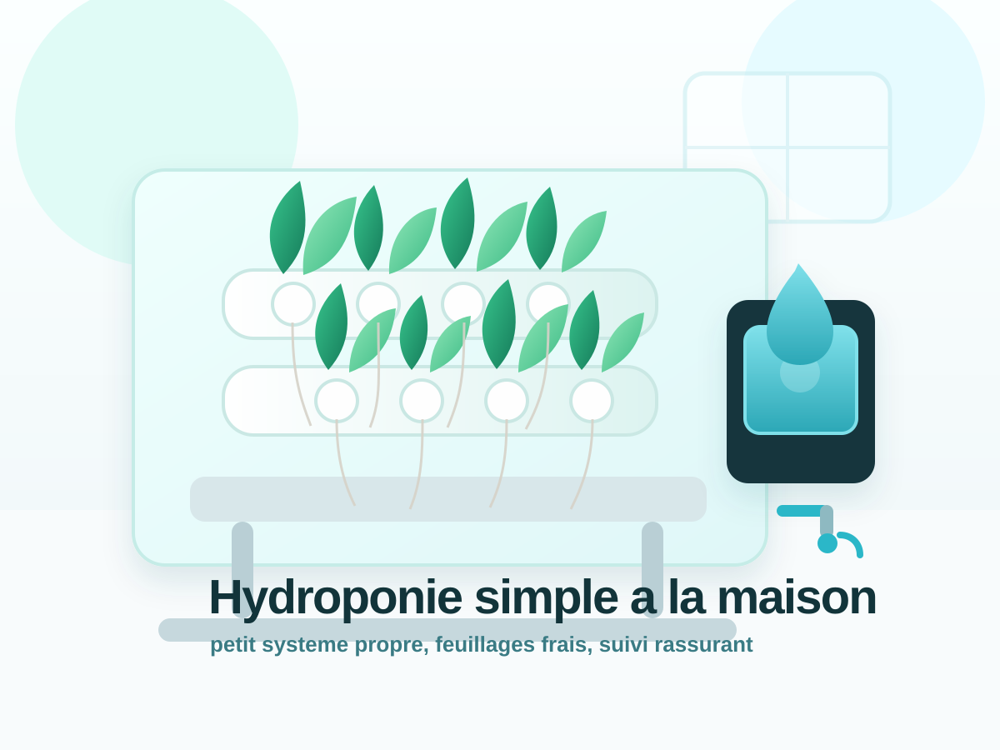
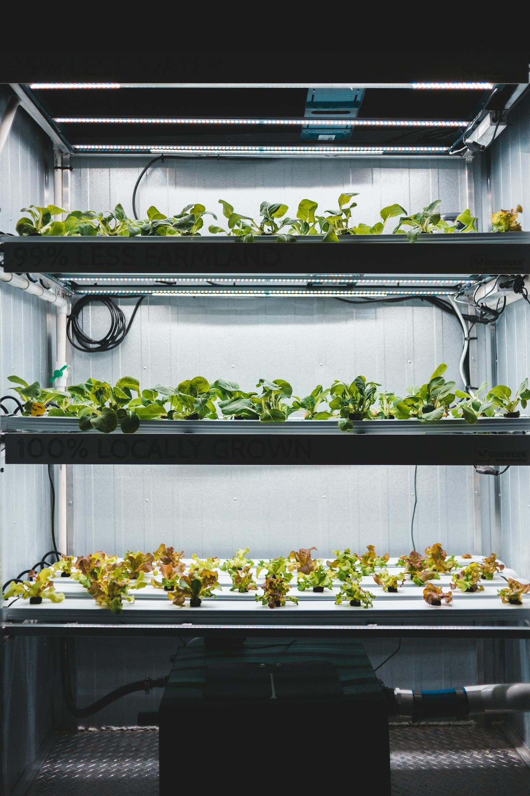
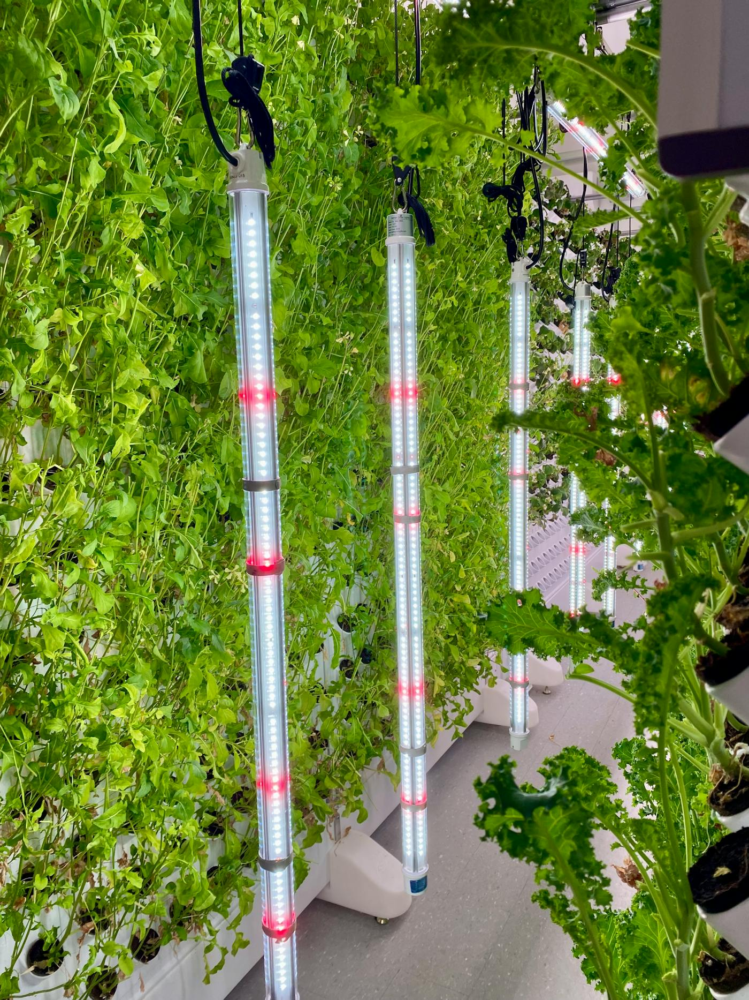
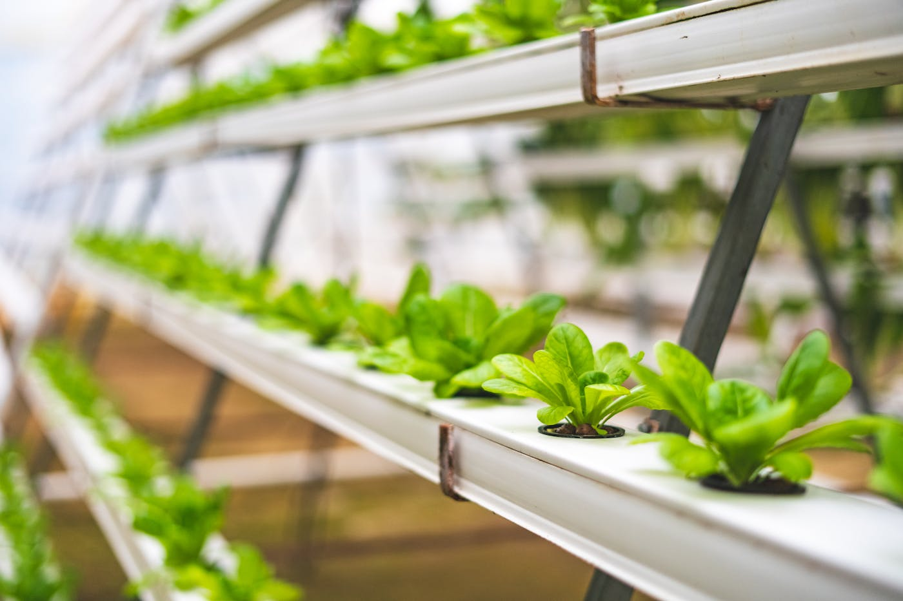
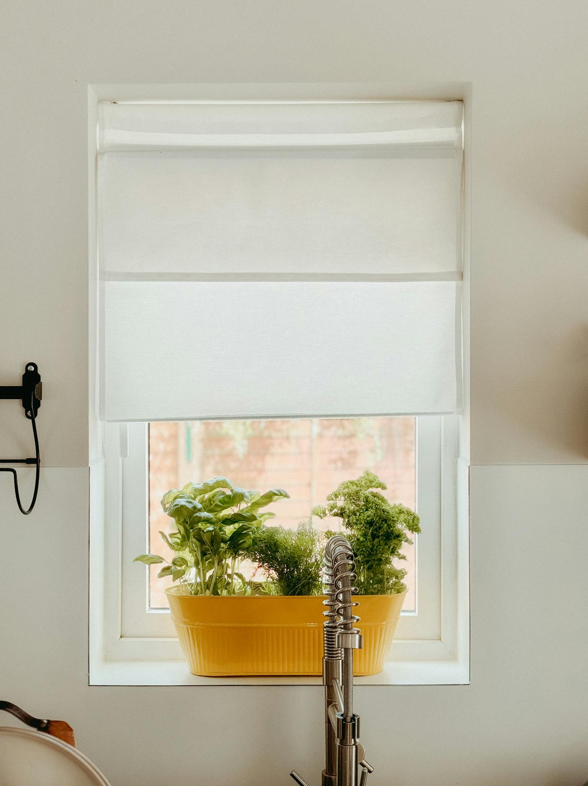
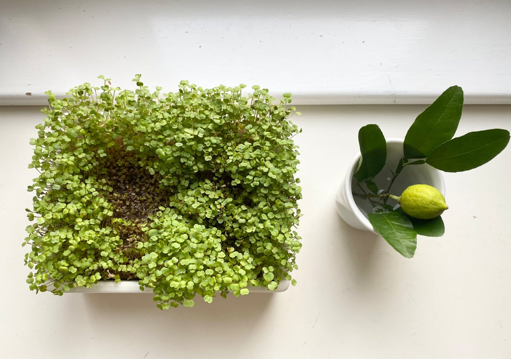
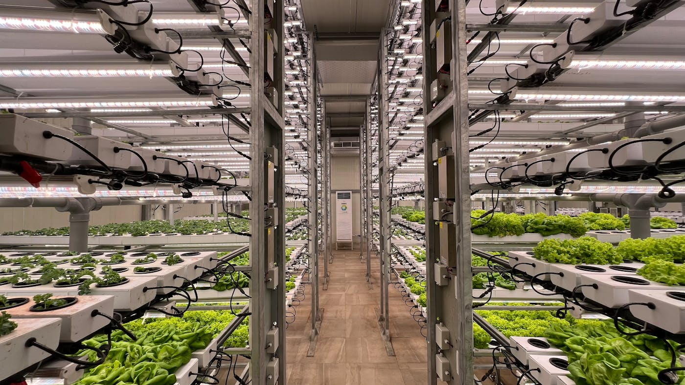

Galerie HydroFacile
Une sélection de photos libres de droits et de visuels HydroFacile pour imaginer une installation hydroponique simple, lumineuse et facile à vivre dans un appartement.
Chaque carte montre un repère utile pour débuter : la lumière, les cultures faciles, le matériel compact et la routine qui garde le système propre.

Un petit système suffit pour commencer
Quelques plantes faciles, un réservoir opaque et une routine simple permettent déjà d'apprendre l'essentiel sans envahir la pièce.
Voir le guide sans pompe
Une étagère LED rend la routine plus régulière
Quand la lumière naturelle manque, une source stable simplifie vraiment les premiers essais et évite les plantes qui filent.
Voir le guide lumière
Le vertical montre surtout l'importance d'un cadre net
Pas besoin d'un système aussi ambitieux pour débuter, mais cette image rappelle ce qu'on cherche : un ensemble propre, lisible et facile à suivre.
Voir le setup débutant
La laitue reste la culture la plus lisible
Elle permet de comprendre vite si la lumière, l'eau et la solution restent stables sans demander un gros volume.
Voir le guide laitue
Le basilic rend l'installation utile tout de suite
C'est l'une des plantes les plus motivantes pour garder une routine simple, parce qu'on voit vite la pousse et qu'on l'utilise vraiment.
Voir le guide basilic
Une fenêtre peut suffire pour un petit test
Si la lumière reste vraiment régulière, quelques herbes ou feuilles peuvent déjà bien démarrer sans lampe complexe.
Comparer fenêtre et lampe
Les micro-pousses donnent un retour très rapide
Elles aident à prendre confiance, à observer la lumière disponible et à garder une dynamique simple quand on commence.
Voir les cultures faciles
Plus le système est net, plus il reste simple à suivre
La vraie progression vient souvent d'une routine stable : propreté, lumière régulière et gestes simples avant de complexifier le matériel.
Voir la routine de nettoyageSe projeter avant le premier essai
La galerie montre l'esprit HydroFacile : propre, simple et pensé pour apprendre l'hydroponie en appartement sans se compliquer.
Photos libres de droits sélectionnées sur Pexels. Crédits appréciés : Emily Bow Pearce, Anthony Rahayel, Miruna Daiana, Lydia Griva, Introspective Dsgn et Pragyan Bezbaruah.